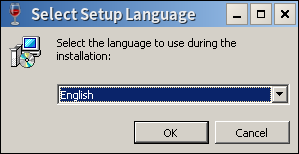
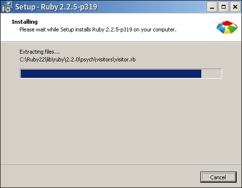
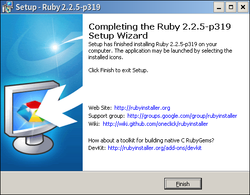

Ruby課程複習
林品儒
2016/11/25
基本概念
程式
以特定指令使電腦運行想要的動作
可以以程式語言編寫
用電腦可以解讀的語言命令之
程式語言
利用標準化的指令定義電腦的行動
但是比電腦更早被發明出來
自動織布機、自動演奏鋼琴
Ruby
開發者希望大家可以快樂寫程式
完成一件事情可以用很多方法達成
由日本人所開發
Ruby程式執行
先將文字檔轉換成特殊的位元碼
再用程式直譯該編碼
先編譯後直譯
使用VM來運行程式
hello, world
直譯器
為了執行Ruby的程式我們需要直譯器
Windows: RubyInstaller
Mac:$ brew install ruby
Linux:各家安裝ruby套件即可
版本選擇
推薦使用2.0以上的版本
有一定的了解再使用x64版本
就用Ruby2.2.5吧
安裝說明
為防止有個萬一還是說明安裝流程
其實就是Enter大法
選擇安裝語言
只有英文和日文可以選
就選英文吧
同意許可證

Ruby為自由軟體就安心同意吧
額外選項

第一個可以不用
但是PATH和檔案關聯建議打開
等它安裝
安裝完成
接下來就可以使用了
使用Ruby
Start Command Prompt with Ruby
Interactive Ruby
執行檔案
要對電腦路徑稍微熟悉
基本的CMD/TTY操作要會
先不要用這個
互動模式
使用irb為工具
輸入程式後就會產生結果
可以專心在語言的熟悉上
hello, world
先進入irb後輸入以下指令
print "hello, world"就得到一行輸出結果
hello, world=> nil踏出第一步
上面就是一個簡單的程式了
就是叫直譯器印出hello, world這幾個字
至於nil我們之後會再討論
基礎型別
類別
只要知道物件有其屬於的類別
每一種類別會有屬於自己類別的功能
基礎類別
Ruby提供了基本的類別讓使用者使用
使用這些類別就能做到很多事
列表
- Numeric
- Integer
- Float
- TrueClass/FalseClass/NilClass
- String
- Array
- Hash
- ...
數字相關
數字有整數和浮點數
Interger
Float
其實還有實數和複數誰用得到呢?
整數
Integer
可以處理非常大的數字
有很多種方法表達整數
整數表達
十進位: 5566,22_000
八進位: 0755,0422
二進位: 0b11001101
十六進位: 0xC8763,0xdeadface
牛刀小試
到底0xC8763在10進位下是多少
0b111,0111,111,0x111
大數
大家可能對這個詞比較不熟悉
電腦一般儲存數字大小是有限制的
能夠不具大小限制的處理就稱為大數
可以當成整數來用
浮點數
Float
浮點數可以近似表達小數
整數和浮點數運算會變浮點數
浮點數也有很多表達方法
浮點數表達
科學記號: 8722.78e6,9.109E-31
小數點: -0.3010,866.6
特殊的NaN,Infinity,-Infinity
四則運算
數字間的運算俗稱四則運算
不過並不只有四種功能
自動轉型
整數和整數運算是整數
但是和浮點數有關就是浮點數
加法
"+"號
浮點數和整數可以混合運算
減法
"-"號
一樣可以混合運算
乘法
"*"號
注意不是使用英文子母"x"
千萬別這樣
0x0
你看結果明明就是0啊
0x16
欸欸欸欸欸欸欸欸欸
除法
"/"號
注意"\"不是除法
整數除以整數恆為整數
除法特例
整數除以0會發生錯誤
100/0
1.0/0
0.0/0
取餘數
"%"號
四則運算中的第五個運算
也要小心整數對0取餘數
指數
"**" 2個"*"號
最刺激的運算
可以開根號或求倒數
牛刀小試
1+2*3-4
(1+2)*(3-4)
2**0.5
5**-1+4**-1
9999**9999
真假值
true,false,nil可以表達真假值
其中false和nil永遠代表為假
其他的數值就算不是true也為真
用來進行條件判斷
真假值表示
true,TRUE
false,FALSE
nil,NIL
以上都小寫或都大寫
字串
String
可以放入各種文字
Ruby原生支援UTF-8編碼畢竟要支援日文
之後會有更詳細的介紹
陣列
Array
可以依照索引放入任何東西
裏面也可以裝陣列
今天還用不到
雜湊
Hash
有時候希望用不同的索引存取資料
可以建立鍵值的配對
也是很好用的類別